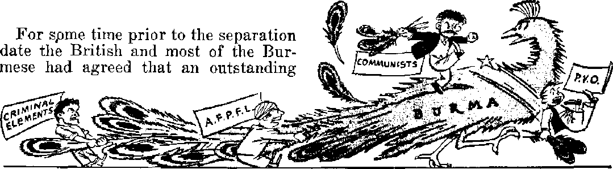
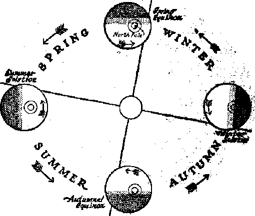

DEMOCRACY BACKSLIDES ON THE RACIAL FRONT Flagrant discrimination turns freedom boasts to mockery
Factors that determine season and climate
Worry about hair? or lack of it? Read the bald facts
"Science falsely so called” attacks, but mature and proved science confirms
NOVEMBER 22, 1948 semimonthly
THE MISSION Of THIS JOURNAL
News acurcefl that arc able to keep you awake to the vital issues of Our times must be unfettered by censorship and selfish interests. “Awake P has no fetters* It recognizes facts, Cices facts, is Gee to publish facts. It is not bound by political ambitions or obligations; it iff unhampered by advertisers whose toes must not be trodden on; it is unprejudiced by traditional creeds. This journal keeps itself free that it may speak freely to you. But it doe$ not abuse its freedom. It maintains integrity to truth.
“Awoke I” uses the regular fiCWB channels, but is not dependent on them. Its own correspondents are on all continents, in scores of nations. From the four corners of the earth their uncenscred, on *fhe* scenes reports come to you tlircugh these columns. This journal’s viewpoint is not 3jarrow, but is international. It is read in many nations, in many languages, by persons of all ages. Through its pages many fields of knowledge pass in review—government, commerce, religion, history, geography, science, social conditions, natural wonders—why, its cover* age is as broad as ths earth and as high as the heavens.
“Awake I” pledges itself to righteous principles, to exposing hidden foes and subtle dangers, to championing freedom for all, to comforting mourners and strengthening those disheartened by the failures of a delinquent world, reflecting sure hope for the establishment of a right* eous New World.
Get acquainted with “Awake!” Keep awake by reading “Awake!**
PUBCISH.KJJ Sk invnifTHLi Bt
WATCHTOWER BIBLE AND TRACT SOCIETY, INC.
11? Adams Street Brooklyn 1, N,T., U.S. A.
N. H. KNORB, Pretfififiat Gran? Suitkh, fieertrffw-p
Flva eentt a capy Ona dollar a year
Mitttaom stioiilrt t* sect to office la ywr ew^-tit 1U eo!Ttp]iniM!ff *lib rttii’|ati{inj to guuantee S*f( tteWw? rtf H1XJM7. fcofttatias «f» accepted *t ErotUJjfM frnui Ejmilrjes *he:e no Off.w Ie iDCHtM, by mcem ar.Lnctiil jnonty orrtcr only, feuDBcnpiltm ra'WS in dUTteitllt c£iuiitrieJ arc bcra cUtod to kcal Mfre-THy.
Kalita of exvlratlcwi (with rcnett&l N&nH} U £Bnt M leuti two lame before eubDcrtptioD «ypim.
Chanp* of arfdnns wb«it tent tu our offleo mor H etptc’j'tl sflRm.lvH wlliihi uno raoatb. 3tnd Tour old M Will M nue add/ea.
OlT.OM Yrar’r Sutoctiptioa D*t$
America, U.S., 117 AdniiE; St., BlooIsItd 1, N. Y. (1 Ai&trclla, 7 KwFsfnnl Rd., BLiaUlfield, X.5.W, fls Canada, aft irwln Avb., Toronto 5, Ontario ¥1 Fagland. 34 Crareu Terrace. Loadou, W, 2 os Svath Africa, <323 Boston Udum, Cape Twa 5s
Enternfl m aecijud'ChM jMUcr at Bw*lyn, N. Y., Act of Mairh S, 1879. frlfited in U.S.A
Detnneraoy Backslides on the Racial Front 3
Breaking Down the Racial Barriers
Caust of and Remedy for Racism
Weather Changes Designed
Newfoundland—New Province of Canada 17
.Keeping the Cost of Living High
“Thy Word Is Truth'*
Whence the Modem Madonna Worship f 2fi
Volume XXIX Brooklyn, N, Y., November 22, 1948 Number 22
Democracy Backslides on the Racial Front
DEMOCRACY in America is not as democratic as it boasts. Not when racial hatred is from border to border, coast to coast. Not when millions of men, women and children live in fear and terror of being violently mistreated, beaten and lynched; not when eight prison guards down Georgiy way go scot-free after murdering eight convicts in cold blood; not when bricklayers are forbidden to enter a district such as Grundy county in Tennessee; not when a man in Virginia is shot dead in .the back by a railroad detective because he complains about riding in a Jim Crow car; not when the mother of twelve children, together with her two sons, ages 13 and 15, are convicted of murder for the killing of a farmer in self-defense; not when hooded cowards of the Ku Klux Klan terrorize 400 voters the night before election to prevent theni from voting; not when a family is driven out of a particular neighborhood following the bombing of their newly purchased home; not when a traveler in Mississippi is forced to go hungry because restaurant owners refuse to serve him food; not when the flames of race riots sweep through cities like Detroit, Mich., and Columbia, Tenn., and leave behind many dead and wounded. When the capital of the world’s greatest democracy, Washington, D.C., practices racial segregation and discrimination against its own citizens is it not a “graphic illustration of a failure of democracy”? The President’s Committee on Civil Rights says it is.
The above examples of racial discrimination are against American-born Negroes, but it does not stop there. American Indians, American-born Jews, and Americans whose parents and ancestors came from other nationalities not belonging to the “lily-white” Caucasian race have suffered insults and discriminatory restrictions upon their personal rights and liberties in this “land of the free and the home of the brave”. Today this racial barrier is being attacked as never before in an effort to establish equality in social, economic and educational pursuits for all citizens regardless' of the color of their skin.
Can' it be done? Can racial unity and peace be achieved at least on a national scale? For some time now a campaign has been under way to provide for the Negroes equal rights at the voting polls, equal pay for equal work through fair employment practices, federal antilynching laws, removal of all Jim Crow traditions that require colored people to ride in a different part of buses and trains from that occupied by whites, abolition of segregation rules in the armed forces, equal opportunities to attend colleges and universities, equal hospital and medical care, and removal of restrictions governing housing areas in cities throughout the nation. When many of these proposals were recently nailed down as planks in the Democratic* platform many Southern politicians stubbed their toes on them and fell so far out of the convention that they put up their own presidential candidate.
Politics Is Politics
In an election year both parties were out to get the vote of discrimination victims, and this year Truman was trying to outbid the Republicans. He was aware of the fact that Negro migration from the South during the war might become the decisive factor in the big states in the North. Already Dewey has been condemned and Truman praised by the National Association for the Advancement of Colored People for their stands on civil rights, Wallace too, and his Progressive party, was also observed fishing on the same political bank for the colored vote. The political football was also being kicked around by a large segment of the Southern democrats that bolted the party and took up the slogan, “States’ rights before civil rights.” They howl that the federal governments attempt to set up anti-poll tax and anti-lynching laws is an unconstitutional move which breaks down state’s rights, destroys democracy and throws the door open for dictatorship, a police state and communism.
White supremacy with a continuation of “Southern customs” and “traditions” is their battle cry. On this point, however, the “solid South” is not so solid. There are two factions: one that advocates liberal reforms in the age-old discrimination against the colored man, and the other , a “dyed-in-the-cotton” faction, that'bitterly resents any reform and is dead-set against any change whatsoever in the balance of power between the blacks and the whites of the South. In this latter group are the loudmouthed politicians like Crump, Murray, Cox, Byrd, Rankin and Connolly wdio presume to speak for all the South. One news commentator describes this class as “the sort that, having successfully avoided conceiving a new idea since 1865, bitterly resent having a new idea thrust upon them”.
Another Southern viewpoint is that expressed by the Baptist preacher of Shreveport, La., M, E. Dodd, former president of the Southern Baptist Convention. Says the “D.D.” Dodd: “The Jim Crow law is for the protection of the Negroes themselves. They have places reserved for them on trains and in streetcars.” Such unselfish (Southern hospitality! Furthermore, Dodd says “the South is wmrking out the solution for racial questions and will continue to do so if not interfered with by others”. To many people, in everything the South just moves aggravaiingly slow. There is another school of theorists that say the problem can be solved by “separate but equal facilities”—a mythical proposition in a democracy, since its very premise is separation rather than unity. For example, in April Negro policemen were seen for the first time on the streets of Atlanta, Ga., but they were forbidden to arrest white persons even if they murdered a man before the very eyes of the colored'“officer”.
In another class’by themselves are the professional hate-peddlers and rabid hate-monger groups like the cross-burning Ku Klux Klan, Columbians, America Firsters and other night-riding vigilantes that are determined to settle the racial question by outright terrorism, violence and force. “Blood will flow” in the South if the Negro is allowed equality with the white man, so declares the Grand Dragon (Satan the Devil is the Great Dragon—Revelation 12: 9) of the K.K.K. Roars the Dragon: “The Klan will not permit the people of this country to become a mongrel race.” This is the same philosophy that plagued the mind of the mad Hitler, that is, that all races should be slaves to the “pure Aryans”.
Breaking Down the Racial Barriers
In recent years many forces have been enlisted on the side of the minority
groupsthat are suffering the stigma and hardship of racial discrimination, and these are now assaulting the racial barriers from many sides. Many of the outstanding business and civic leaders have promoted what they call anti-bias drives. The Association of National Advertisers, the American Association of Advertising Agencies and the Bureau of Advertising of the American Newspaper Publishers Association have set as their objective the making of “racial prejudice as unpopular as B.O.” The labor organizations such as the CIO and the Socialist Industrial Union have made the cause of the oppressed Negro their cause in an effort to bring him into their organizations. The New York county organization of the American Legion advocates “abolition from all branches of the armed services of all forms of segregation based upon race, creed, color, ancestry or national origirf” in an effort to make the American Legion “more democratic”, a shortcoming of the organization long overlooked.
The National Council of Christians and Jews, the American Jewish Congress, the Federal Council of the Churches of Christ in America, the Board of Christian Education, the Board of National Missions of the Presbyterian .Church, the Institute on Racial and Cultural Relations, and the Jesuit publishers of the national Catholic weekly, America, have all come forward with drives for better understanding of the racial problem.
The tight for racial freedom is pushed along many avenues of human endeavor: in the schools and colleges, in the hospitals, in the field of medicine and the world of sports, in the army, and even in the religious churches. Many schools in the North under the pressure are doing away with the discrimination and segregation laws, but throughout the South it is an altogether different story. Down there, where, we are told, “the South is working out the solution for racial questions”not only are the children segregated but the difference in the facilities provided and the training given is astonishing. Even among the schoolteachers the inequality is appalling. For example, in Mississippi 8,929 white teachers have an average annual salary of $1,108, whereas 6,236 Negro teachers get an average of only $398 for the same work.
In the colleges and universities of the country, both in their classrooms and in their fraternities and sororities, the story is about the same. Progress has been made in some, while others tenaciously hold on to their “traditional'’ beliefs in white superiority. The University of Delaware and the University of Arkansas have opened their doors to Negroes provided the “Southern custom” of segregation is strictly enforced. One of the most outstanding cases that recently moved the country involved a Negro law student, the University of Oklahoma and the United States Supreme Court. When the Court ordered the University to enroll the Negro girl in their law school they tried to by-pass the order by setting up “equal facilities” in a separate building removed from the University proper, and that, in spite of the vehement protests on the part of the student body which favored bringing the girl into their midst. In 1946 Texas spent $2.01 per capita for higher education for whites, but only $0.44 for Negroes.
Ugly discrimination, standing before many hospitals throughout this so-called democratic land, bars the entrance of Negro men, women and children and turns many of them into an early grave. There are no arguments that can be advanced to justify such fiendish treatment. The Negroes are intelligent human creatures, not beasts of the field. It is estimated that there is a shortage of over 5,000 Negro doctors due to discrimination. And the few who have overcome great barriers and have climbed high enough up the ladder of success to obtain a doctor's degree are still denied membership by the smug American Medical Association. This in turn deprives them of many courtesies and privileges and hinders their humanitarian practice.
It is a strange thing. In time of war the colored man is considered as valuable for the national defense as the noncolored. Both are expected to pay the same price in human sacrifice, suffering and blood. Yet the one is discriminated against, instead of being considered a comrade in arms against a common enemy. Since the recent war ended the Negro has renewed with greater vigor than ever his efforts to have this injustice corrected. When the present peacetime draft was before Congress many of the colored people, represented by the Sleeping Car Porters’ Union, threatened civil disobedience if such measures failed to do away with segregation in the armed forces.
Congress, however, failed to write the anti-segregation provision into the draft law, and Defense Secretary James For-estal and Army Secretary Kenneth C. Royall said that “in the interest of National Defense" the inequality in the regular army will continue. They failed to explain how such segregation is in the interest of democracy. New Jersey has set the example for the rest of the nation by wiping out this form of discrimination in its National Guard units.
Sports! If there is any field of endeavor where unity and peace among the races should be manifest it is here, for discrimination and race hatred are so foreign to the very spirit of sportsmanship and the mirthful diversion of playtime. The heated controversy over the discrimination issue that has been batted around the professional baseball diamond is evidence that not all is as peaceful as it should be. Out in California the Professional Golfers’ Association refused to enter two players because their skin was dark. The American Bowling Congress still maintains its “racial discrimination" clause. In Baltimore, Md., 17 are arrested for staging an interracial tennis match. The Palisades Amusement Park in New Jersey, after admitting Negroes to the park, refused them the use of the swimming pool.
Where Religion Stands
And what about racial discrimination in the churches of the country? Here, too, there is a great diversity of practice and belief, as was expressed by a cross-section opinion of Oklahoma clergymen. Some were in favor of segregation in the churches; others were opposed. A St. Louis church federation asked its members to cease the practice of segregation. Likewise a Virginia council of churches. But down in Birmingham, Ala., if a white man, though he be a United States senator (Glen Taylor, for example), enters a church for public worship through a door intended for the colored only he is arrested.
A Religious News Service dispatch from Columbia, S.C. (May 13, 1948), reads: “Total race segregation is The will of God' and must be maintained, according to the General Conference of the Southern Methodist Church, . . . ‘The Almighty God saw fit, in His infinite wisdom, to segregate the races in the beginning, and we earnestly believe that the, will of God (will) be best served by continuation of the total segregation of 'the black and white races.’ ’’ Have you ever heard such tommyrot? Where in the Bible does it say that Almighty God segregated “the races in the beginning” or that it is the “will of God” that such discrimination be practiced today?
The will of God is expressed in the Word of God. So, wThat does the Bible say ? In the beginning God made all people for to dwTell on the earth, not segregated, but in peace. It was the practice of religion on the plains of Shinar and the building of the towering religious edifice of Babel that scattered and segregated the nations. In God’s due time,
when the religion of the Devil has been wiped out, when a man no longer asks his neighbor who the Lord is, when religion no longer divides the people into a thousand sects and cults—then “all nations” will go up together and worship Jehovah God in peace. Clergymen would do well to first read the following scriptures before talking about what God’s will is.—Acts 17:26; Genesis 11:1-9; Jeremiah 31:34; Isaiah 2:2,3; Micah 4:1, 2.
Progress Made
Eighty years ago the 14th Amendment to the Constitution was ratified and declared to be a fundamental law of democracy. During this time some progress has been made toward the*goal of making freedom the heritage of all people of the country. In Washington, D.C., Negro internes were admitted to Gallinger hospital for the first, time in February of this year. For the first time, recently, Negroes were allowed to sit on a county grand jury in Mississippi.
Much of the fighting against discrimination both past and present has been in courts of law. Since the famous Dred Scott case there have been many legal victories won. In 1946 the Supreme Court added another by ruling that racial segregation of passengers on buses crossing state lines was unconstitutional, and this year the High Court knocked the props from under the terrible “ghetto” system that has heretofore heen fostered and maintained by local government. Cities and states can no longer pass laws, and neither can the courts enforce ordinances, that prohibit Negroes and others from buying, renting or selling any house or property, provided the owner is willing to sell or rent. In the matter of voting the courts have handed down decisions allowing Negroes in South Carolina to vote in the Democratic party, under threat that if they are not allowed the white-faced politicians will face jail sentences.
There is, however, not much hope of obtaining complete freedom from racial discrimination by the hand of the forces that are now fighting racial hatred and bias, or by the strategy that such forces are employing. In the first place, fighting does not breed love for the enemy. Fighting for every privilege they now enjoy has not engendered in the colored race love for the overbearing, proud and haughty white man. In some instances the Negro has assumed a similar overbearing, proud and haughty disposition, thinking that in doing so he is acquiring an equality with the white. In other cases the contention has provoked bitter hatred for the white, which has sometimes reached the igniting point. In still other instances it has caused some Negroes to feel superior to others of their own race.
Cause of and Remedy for Racism
Why does the Caucasian look down on and discriminate against those of the colored race? Abked why, those that do will say that it is because of the Negro’s crime record, standard of living, social habits, and his high degree of sickness, disease and high death rate. Some will add that the Negro race is more primitive, hence inferior to the white race.
The crime -rate. It is higher among urban Negroes than among whites, but this is primarily the white man’s fault, not the Negro’s. Investigation has shown that the vermin of delinquency and crime breed rapidly in the fertile soil of ignorance and the economic poverty found in the overcrowded, filthy city slums. But the Negroes do not live there by choice. They pitifully cry for deliverance from such deplorable conditions, and beg for better homes and living conditions, but with deaf ears the white man has done everything in his power to keep them in these inferior quarters against their will. The Negro’s economic poverty is due to a lack of education, and this too is primarily the white man’s fault.
If any will argue that the Negroes as a race do not have as great a mental capacity for education, then it can be pointed out that the intelligence quotient of the Northern Negro is higher than that of the average whites of South Carolina. Doctor Robert Redfield, professor of anthropology at the University of Chicago, has said that there is no evidence to show “any difference between Negro and white students on the question of intellectual capacity’. Tn accomplishments there are “mental giants” in all races, including the Negro race. Marian Anderson, for example, is ‘‘the world’s greatest contralto and one of the very great voices of all time”, says Time magazine. The idea that the colored race is more primitive than the white springs from the devil-inspired doctrine of evolution.
The Negro’s life span is ten years shorter than the white man’s, yes, but not because he is physically inferior. Force the white man, as the Negro has been forced, to live and work under unhealthful conditions, and then deny him medical care, as the Negro has been denied, and he too will lose years of his life.
And wdiat about smell? Some claim that Negroes have an objectionable body odor that would nauseate whites if they were allowed to eat at the same table or sit’beside them in a train or theater. But is it not strange that the -whites, instead of being disturbed, are more than pleased when the colored are waiting on them at the table or are by their side carrying their bags or making up their berths. It is pure mythology that the Negro smells any worse than the white man; so says Bergen Evans, noted professor of Northwestern University, who makes it his business to debunk this sort of bunk. Make the white man live in the same squalor as some colored men, deny him education in personal hygiene, and he will be offensive in the nostrils of sensitive individuals. Advertisements for deodorants and perfumes always recommend them for beautiful -white girls. They too by nature must need them.
Not only is racial discrimination “America’s Dilemma”; it is the dilemma of the whole world. South Africa has a color-line crisis that dwarfs that in the United States. India has the racial question to add to all its other woes. Australia, determined to stay “white”, has strict discriminating immigration laws. In fact, at least forty nations belonging to the United Nations have racial problems at home, and all human government spinel uding democracy, have failed to solve them.
We are brought back to the unrefutable truth that the Theocratic Government, administered by Christ Jesus the Prince of Peace, and ruling over lovers of righteousness of “all nations”, is the only answer to the question of racial hatred and discrimination.
National Disgrace”
Ten million Americans, one out of every seven adults, can neither read nor write! In asking $130,000,000 in federal funds to aid these people, Senator Harley M. Kilgore declared that there arc 4,200,000 American-born whites, 3,200,000 foreign-bom whites and 2,700,000 Negroes that cannot read such signs as “Explosives—Keep Away” or “Poison—Uor External Use Only”. The army had 350,000 soldiers between 21 and 45 that were so illiterate they signed their names with an “X”. The highest number, or 36 percent, live in the state of Louisiana, Iowa'has the lowest figure, 4.1 percent.
This in itself is indeed a sorry state of affairs in the enlightened twentieth century. But more shameful, more disgraceful and even more tragic is the fact that the richest government on earth, that thinks nothing of spending billions upon billions of dollars for rearming the whole world, flatly refused to spend one penny for the basic education of 10,000,000 of its people! It killed the Kilgore bill.
/ncfepencfent At Last/
ON JANUARY 4, 1948, the date chosen as “most auspicious” by officially favored astrologers (opposition astrologers complained the date was not “auspicious”), the 17 million people of several racial groups inhabiting Burma’s 260,000 square miles of river-valley plains and mountains were granted independence. This after more than half a century of subjection as a vassal state of the seventh world power, the British Empire. After the initial excitement and joyous anticipation on the part of many Burmese had died down, a disquieting impression that after all the trouble the nation had not yet reached the foot of the. rainbow began to affect the discerning.
Prior to independence every Burmese national group, right-wing, liberal and rabid left, had sung in unison to demand freedom from foreign domination. Soon after such freedom was attained, >and with it the strong binding tie of unity of opposition to Britain was dissolved, the various political groups in the newborn republic of the Union of r Burma began to disagree and to direct toward each other the violent opposition hitherto raised against foreign invaders.
Burman, Aupg San, was the man to lead and direct the new republic. As reported herein earlier, Aung San, together with several of his fellow leaders, was murdered by some young men sent out by an opposing political group only a few months before the British withdrawal from the country. Those charged with engineering and executing that wicked plot have since been arrested, tried and executed. The nation, however, continues to mourn Aung San, who was to Burma somewhat what the late Gandhi was to India.
Attending to business elsewhere, Aung San’s right-hand man, Thakin Nu, missed the fatal party where Aung San-passed from the scene, and when the last British governor of Burma sailed down the Rangoon river in the early morning mists of January 4, he left Thakin Nu, backed up by the.heterogcneous Anti-Fascist People’s Freedom League (the AJLP.F.L.), in office as Burma’s first prime minister under the republican six-starred flag.
At that time the A.KP.F.L. comprised three political groups, Thakin Nu’s Socialist party, the Communist party, and the party of which Aung San had been leader, the People’s Volunteer Organization (P.V.OJ--
The foreign policy of the Thakin Nu government, as stated in London by its foreign minister, U Tin Tut, on July 27, 1948, “is aimed at state socialism, but by ordered stages. There is no idea of expropriation of foreign interests without equitabl e compensation.” He declared his government's intention of “adhering faithfully to the provisions of the Anglo-Burmese treaty, concluded shortly after the transfer of power from Britain”. (U Tin Tut died September 19 from the explosion of a bomb placed in his car by assassins.)
Political Setup
2TOFE7OEJ2 22, 1948
9
Under the terms of that treaty the economic structure of the country remains much as it was under British rule, and, subject to certain reasonable restrictions, foreign capitalized firms remain free to do business in Butina. The treaty provides, however, for the faking over by the Burma government of a number of very large British concerns working teak concessions in the north, some public utility companies, and Other undertakings. Already the government has taken over some of these companies and is* negotiating with them regarding compensation.
Insurrection Breaks Out
Only a few months after secession the Burma Communist party, attempting to enforce a policy so antagonistic to Britain and the U.S.A, as to put a complete end to Burma’s rich foreign trade, if not to lead to war, fell out with Thakin Nu’s government and, failing to gain their demands at the council board, raised armed bands and began a minor civil war. The Communists demanded the immediate seizure, without compensation, of all foreign property and the per capita division of the same among the Burmese population. They demanded other drastic action toward foreigners, particularly the British, but also Americans, Europeans, Chinese and Indians.
The idea of something for nothing (Britain’s investments alone amount to around U.S. $60,000,000, with Chinese and Indians owning very much more) made a strong appeal to a certain class among the Burmese; so the insurrection has received some support, and continues to the time of writing. But as Britain and the U.S.A, buy most of Burma’s exports, with China and India taking the balance, and as these nations supply most of her imports, and Britain and her allies hold complete control of Burma’s sea approaches, such a foreign policy would seem to amount to national suicide in a country so small and militarily weak as Burma.
Some time after the Communist defection, and in an effort to unite the country, Thakin Nu issued a manifesto of fourteen points, a number of which were very radical. Instead, the manifesto merely drew a howl of protest from London and other places, no noticeable response from the insurgent Burmese Communists, but some very strong opposition from the P.V.O. A section of the P.VA now broke away from the rest and, during June and July, 1948, withdrew from the Thakin Nu government of Burma. Toward the end of July the Rangoon papers announced that many members of the P.V.O. had gone over to the insurgents, arms and all, and that the government had been compelled to disarm and arrest a great many of the remaining members to prevent further desertion.
The Lot of the People
While politicians thus play for power over the people whom they claim to serve, the lives of many innocent people are lost. For many months of 1948 the insurgents ravaged central Burma, looting, murdering, torturing, burning and raping in countless homes and villages. From remote places in the jungle armed bands descended on isolated farms and villages. Where these bands.were better led and politically moved, the villagers were not disturbed other than by the removal of police weapons, the inducing of police personnel to desert, and sometimes by abduction of prominent government supporters. Criminal elements, however, took advantage of the cover provided by the insurgent activities and much of the violence seemed criminally rather than politically inspired? Said the Burma edition of the Calcutta Statesman in its issue of July 17, 1948, regarding the Burma insurgents:
Communist activities are, however, hopelessly mixed up with the operations of ordinary criminals, especially in the rural areas, where every dacoit (armed robber) leader calls himself a Communist and commits da-coity with violence in the name of Communism. It is therefore not surprising that, since the insurrection began, the real Communists have lost what little reputation they enjoyed.
With the defection of the P.V.O. the insurrection took on a much wider scope, and at the time of writing the insurgents have occupied some towns no very great distance from Rangoon. (In the Irrawaddy delta, too, they have come to considerable power and the important Bassein district is under martial law. (At the moment, it seems touch and go whether or not the Thakin Nu government will succeed or whether the rebels will win; so by the time this goes to the press big changes may have taken place in Burma.)
Coming to birth during the war years, when the Allies were laying heavy stress on the Atlantic Charter concerning human freedoms, Thakin Nu’s government has tried to preserve at least the framework of democracy. Until June, 1948, some three months after the armed Communist insurrection began, Communist processions with banners, slogans and hammer-and-sickle flags paraded the main streets of Rangoon. The press, too, has been allowed complete freedom. Some Burmese newspapers have betrayed a deplorably low ethical level, and, instead of helping to unite the people, they have, by free publication of wild rufnor, slander of men in office, and political opinions calculated io arouse the basest warring passmns, generated enmity between Burman and Burman, and particularly btween Burman and foreigner.
Progress Despite Difficulty
It must not be thought that because there is internal conflict the general population of Burma is disaffected. The fighting is confined to relatively few, though innocent bystanders mainly suffer. By far the bulk of the population of Burma is working industriously putting the face of the land to rights and producing the needs of life. Out of the actual battle areas the farmers continue their cultivation and roads and railways are continually restored, though they are still far from the prewar condition. Big development projects are under preparation, and some quite big achievements testify to the industry of the better class of the land.
A year ago many streets in Rangoon were still blocked with bombed debris, harbors were in ruins, and shattered walls and picturesque, bullet-pierced telegraph and power poles leered drunk-enly throughout the city. Today almost all the streets are cleared, the docks are restored, mhny bombed sites have been cleared and new structures erected, and most of the bullet-holes are gone. The Rangoon railway station has largely been restored, most of the city streets are again fairly well asphalted, and water and electric lights are again available to, most houses. Of course, a very great deal remains to be done before the prewar condition is restored, but no one can deny the creditable effort made.'
As world-wide, public men in Burma realize a need for more righteousness to produce safer government, and or some unknown means to turn away the heavy peril facing all nations. Observing what it is, Burmese leaders have generally not advocated religion as a remedy. As in other near-by countries, a very big enemy of good Burmese government is political corruption, and the best people of the nation are deeply concerned to find some way to transform men of price into men of integrity.—AWAKE!! correspondent in Burma.
*fWhlle the earth remaineth, seedtime and harvest, and cold and heat, and summer and winter, and day and night shall not cease/’—Genesis 8:22.
SINCE this announcement to Noah and his family, as they had just given thanks for preservation through the deluge, the climate and weather has held abiding interest for men. That Jehovah designed climatic change is verified by a later Bible writer: “Thou hast set all the borders of the earth: thou hast made Summerland winter.” (Ps. 74:17) Still farther along in the stream of history, weather forecasters, the forerunners of the modern meteorologists, arose among the Pharisees. Jesus contrasted their lack of spiritual discernment with their ability to predict clear weather and rains: “When it is evening, ye say, It will be fair 'weather: for the heaven is red. And in the morning, It will be foul weather to-day: for the heaven is red and lowering.”—Matthew 16:2,3, Am. Stan. Ver.
To sailors and farmers, to whom the weather meant existence, the general truthfulness of the Pharisaical forecasts became crystallized in the proverbs: “Red sky at morning, sailors take warning; Red sky at night, sailor’s delight”; and “Mackerel sky, quickly wet or quickly dry”. Even today the meteorologist, who is generally referred to as “the weather man”, relies considerably upon the appearance of the sky, in determining the weather's next move. He is aided by receipt of observations from weather stations over several thousands o/miles, from ships at sea, and by a good many instruments, most important of which are the wet and dry thermometer, the wind gauge and the barometer, which measures atmospheric pressure.
But despite the extremes of climatic variety with temperature changes from a Avinter temperature of 90 degrees be7 low zero on the Siberian tundra to 136 above in the Libyan desert, and annual rainfall ranging from 1.35 in Death Valley, California, to 426 inches in Cher-rapunji, India, there are certain predictable features of climate that the average man can understand and take advantage of.. An examination of these influences which govern temperature and precipitation, the most important determinants of the climatic zones, reveals again the boundless wisdom of the Creator.
The Sun
Of first importance is the sun, the source of all heat, and, resultantly, of atmospheric movement. Basically, the cause of all the winds that blow is the greater heating of the atmosphere at the equator, and if these winds did not blow they would not .transport the sixteen million tons of water that comes from the oceans and falls as rain every second on the planet earth. Effortlessly and without charge the atmosphere surpasses all the freight carriers that could ever .be devised. As wise King Solomon described it, “The wind goeth toward the south, and tumeth about unto the north; it whirleth about continually, and the wind returneth again according to his circuits. All the rivers run into the sea; yet the sea is not full; unto the place from whence the rivers come, thither they return again.”—Ecclesiastes 1: 6,7.
The amount of energy delivered to earth at the outer limit of the atmosphere is constant and is equal to 1.94 calories per square centimeter per minute. This complex of energy, called solar radiation or insolation, totals for the earth each second the burning of one billion tons of coal. Quite evidently, however, the .amount of beat actually received on the earth’s surface depends on several factors. Of these factors the only one that can be calculated precisely is the angle of the incidence of the sun’s rays, or the directness of the sun’s rays as they vary with the season and the latitude of the earth.
Just why should its latitude be the most important factor in determining the climate of a locality? Because the sun’s rays are most effective when they strike the surface of the earth at a perpendicular. This is illustrated by the advancing sun of the day. In early morning its beams strike at an angle that lessens until it reaches its zenith at noon, shining most directly. It is similar with the seasons and locality.
Anyone who has looked at a globe has
remarked that the earth does not set upright on its axis, but tilts, which inclination is measured at 234 degrees from the perpendicular position. All climatic changes are caused by this apparently small circumstance. It is the inclination of the earth’s axis that causes the changes of the seasons. If the axis of the rotating earth were perpendicular to the plane of its orbit, there would still be alternation of djJy and night for all parts of the earth but there would be practically no change of seasons.
In order to understand this passage of the earth, traveling around the sun at a speed of more than 1,100 miles per minute, take an apple and tilt it so that the stem is not exactly perpendicular to the ground. Then slowly, while holding it in this position, describe a circle parallel to the ground. The stem will correspond to the north pole, the blossom end to the south pole, and the center of this circular motion you have described, the sun.
Now note that as you keep exactly the same tilt the stem will be closest to the center (or sun) in one position and farthest from it in another. In other words, it will tilt toward the center in one position and away from it in the other. When it tilts toward the sun the rays fall more directly in the north, and when away from the sun the rays actually do not strike the north pole at all. Conversely the change takes place at the south pole. For half of the circle the sun’s rays fall more directly on the Southern Hemisphere, and then that part of the earth enjoys the summer season while the Northern Hemisphere endures the winter. But on the other half of the circle (which circle requires one year to complete and marks a solar year) the Northern Hemisphere is tilted toward the sun fpr its summertime while the Southern Hemisphere has its winter. Thus has Jehovah arranged matters to give seasons. The poles stand for the two climatic extremes. On the other hand, the equator, which is the great circle imagined to surround the earth exactly halfway between the poles, has the least extreme, the most equable -climate.
However exactly the position of the sun and the latitude of the location can be calculated—and this can be done precisely—it is evident that these factors do not entirely determine climate. Even temperature does not tell the exact nature of the climate. For example, the mean annual temperatures and mean monthly extremes of Galveston, Texas, and Cairo, Egypt, are almost identical; but Cairo has an arid climate and there is plentiful rain in Galveston. Growing season is very important, also. While Yakutsk, Siberia, has an annual mean temperature of 13.3° Fahrenheit, and Angmagssalik, on the east coast of Greenland, an annual mean of 28.0° F., yet this east coast of Greenland is barren, while forests grow around Yakutsk and even some crops are raised. The explanation is that the warmest month in Angmagssalik is 43.2° F., while it is 66.2° F. at Yakutsk.
Air and Wind Currents
Other features which affect climate include the air, the water, the character of the earth’s land surface beneath the sun’s rays, the earth’s 325 active volcanoes, the rotation of the earth, and sun spots. Next to the latitude, the state and movement of the air is of prime importance in determining climate.
There are times when a man, even in his general preoccupation with the cares of life, stops for a moment in a sweet-scented garden or a pine-clad valley to relish deep draughts of air. Or it may be the tangy air from a crested sea or exhilarating freshness of frosted atmosphere on snowy slopes. He may even remark upon it or simply fill his soul with the luxury of this versatile creation of Jehovah. Despite this appreciation, expressed or unexpressed, it is doubtful whether many even dimly realize what a functional and marvelous creation is that gaseous mixture of nitrogen and oxygen. Nitrogen composes 78 percent, oxgyen 21 percent, and there are various other gases, argonf carbon dioxide, hydrogen, helium, neon, krypton and xenon. Water vapor, dust and Small particles of salt are “guests”.
This atmospheric cloak about the wrinkled, tilted globe, spinning and rotating, is perhaps more marvelous than earth's winter ermine wrap and summer print. It neither wears out nor stretches permanently out of shape. It is fluid enough to penetrate our most delicate tissues and prevent our collapse under the 14 tons of atmospheric weight we carry about. A snowflake can parachute through it without the disarrangement of a crystal. Yet it can transport a billion tons of water inland without spilling a drop. Compared with its vast power, the few expressions of its stormy fury are not numerous.
It has been said that “weather is air in trouble”. Also, “when you feel wind on your face you may know that you have interrupted a parcel of air en route somewhere to keep a barometric appointment.” But why does air have pressure? Like all matter, air has weight, and hence is held to the earth by gravity pull. A column of air exactly one square inch in surface from the earth continued to the ceiling of the atmosphere, traces of which prbbably reach 150 or 200 miles up, weighs about 14.6 pounds at sea level. The higher one goes from sea level, the shorter this column of air and the less the pressure.
The barometer measures the pressure. Barometric pressure is always changing, more or less rapidly, all the world over, and the changes give a valuable clue to the weather processes. In general, the highest pressures will be found in the subtropics about latitude 30 degrees to 35 degrees north and south. The pressure is somewhat less at the equator. On the poleward sides of the subtropics, it falls to a minimum at about 60 degrees north and south latitude, and rises a little in the polar region. These pressure systems are the bas^s for weather types, the high pressure systems having light winds and generally fair weather, the low pressure systems strong winds and cloudy, rainy weather.
Further, the pressure systems are the basis of the great wind systems, which exert a dominant control on climate. There are many of these, but the two most prominent are the trade winds and the westerlies. The trades are the palmswaying winds of the subtropics which blow from the northeast in the Northern Hemisphere and from the southeast in the Southern Hemisphere. Their sweep is over a wide area in latitudes 10 degrees to 30 degrees north and south latitude. They are comparatively constant; that is, they “veer” (change direction clockwise) and “back” (change direction counterclockwise) very little, and are so steady in direction and force that the mean (recorded average) gives a good approximation to the winds likely to be found on any day. On the other hand, the westerlies are “prevailing” or variable winds, found between these systems ' and the latitudes 60 degrees north and south, have irregular pressures and hence a great deal of bad weather.
It has been remarked that difference in heating causes difference in pressures and results in air currents or winds. But how? Suppose you build a fire under a column of air in a smoke stack. You can see the air expanding and rising from the movement of the heat waves above. As this rises some more it spills over onto the air around, so that the weight of the column in the stack is less. Cold air at the bottom pushes in to equalize the pressure, and also the outflowing currents above push on the air entering at the bottom. Thus a current is set up. Air receives its heat almost entirely from earth surface, land or water.
Winds always blow from places of higher pressure to places of lower air pressure because the great force producing winds is gravity. They tend to follow topography, avoiding elevations and cold areas, to follow valleys, go toward warm areas, descend slopes. Because winds seek low pressures, rapidly falling barometric pressure often presages a gale, sometimes the cyclone or hurricane. . However, the meteorologist also takes into account the temperature, precipitation, and wind direction.
Vertical upward movements are sometimes severe, but milder ones are called “thermals” and are used for lifting gliders, which have been maneuvered by skillful operators to an altitude above 14,000^ feet. These vertically rising columns also cool as they give up heat in ascending, and this is called adiabatic cooling, and is about 5.5° F. per thousand feet for dry air. A startling manifestation of this rule is the chinook wind. Winds from the Pacific rise up the high Canadian Rockies, moist and, say, at about 35 degrees F. They lose their inois-;ture on the crests of the sierras, then plunge downward, heating up in the descent. In Alberta east of the Rockies the winds can raise the ground temperature 40 or 50 degrees in a matter of minutes.
Clouds as Weather Forecasters
This section brings our consideration back to weather predictions based upon observations of the sky. A cloud may be defined as a fog which has taken to the sky. It is finely divided particles of water, as yet too minute to fall as rain; or it may be a thin veil of ice crystals, as the cirrus cloud. Clouds are often the crowning decoration of a column of air, and take on the proportions of a towering Everest with a Grand Canyon at its base, like the “cauliflower mountain” called "cumulus”. The reason that clouds often form at the top of rising columns of air is that warm air can hold more moisture than cold before it becomes “saturated” and can contain no more water vapor or moisture. When air reach es saturation for a given temperature, it must lose some moisture if any further drop is made. This temperature is called the “dew point”. When you hear a dew point being given in the weather forecasi it means the temperature at which the air must begin to precipitate some water, as dew, rain, fog, frost, snow, e’ .
Thus rapidly falling temperatures may bring rain or snow. In the Norther? Hemisphere winds which sweep over th« tropic oceans and the Gulf Stream often meet cold currents from the arctics and the poles and account for the bad weather encountered in much of the eastern United States and England. The cold air currents undercut the warm, great “fronts” of discontinuity at the contact points and bring -falling pressures and temperatures followed by wind, rain, and even cyclones. These low-pressure storm centers travel. The movements of one of these was traced from Havre, Mont., February 23, 1925, through its “perambulation” around the globe until its return past the starting point to the Gulf of St. Lawrence, one month later. The distance traveled by the center was 21,379 statute miles.
Before such a storm, perhaps 1,000 miles in advance, you nearly always see high cirrus clouds, like arrowy wisps, arcs, and plumes, feathery in their flawless beauty. Some of these detached clouds have been popularly called “mare’s tail” or “cat’s tail”. If cirrus
combed wool” is followed also by the dappled field of cloud flakes, called the cirro-cumulus, “mackerel sky,” it betokens rain when this sky begins to deepen into cirro-stratus. Cirro-stratus is the veil which, dims the blue and causes the halo on moon and sun. The cirrus clouds are high and give the aviators no trouble.
Lower are the alto-clouds, alto-cumulus and alto-stratus. These are detached and fleecy but lower on the horizon; when they blacken a shower is imminent. The stratus clouds are the lowest ones, from 6,000-foot levels clear down to 100 feet. They are dull rain clouds. The cumulus cloud is perhaps the largest of all, the “fleecy mountain”, and may stretch vastly in vertical extent. On a summer day these mean little; but a blackening cumulus is real danger for the aviator and often brings the thunderstorm.
Thus it is seen that sun, air, land and water make our climate according to certain conditions fixed by Jehovah. It is noted that figs and magnolias once grew in Greenland, and that a reversion of the ocean flow from pole to equator now operating would likely melt the icecaps. If this were done suddenly, however, it would engulf New York, London, Tokyo, Shanghai and much land by raising the water level about 150 feet higher than now. It is therefore fortunate that Jehovah, with His vast wisdom, will supervise any changes that He may choose to make that the cold and hot climates may be somewhat equalized. The New World, including the climate everywhere, will be delightful.
Y?hc "New Look” Clarified
A headline in the New York Star reads: ‘‘Wear Clotnes That Fit Your Mind, Rather than Figure^ Says Designer Elizabeth Hawes/’ So, you see, they fit something, after all!
IT IS Saturday, July 23,1948. The peo-
pie of St John's, capital city of Newfoundland, are tense with expectations of trouble, with sudden realizations of the momentous decisions being made, and with pervading fears for the future* Little groups are gathered on street corners and in shady doorways, venturing opinions in quiet voices. Others, not wishing to become involved in conversation, avoid talking and rush on their way. Some are of sad countenance, feeling defeat Some are worried. Some would like to rejoice in victory, but are afraid to do so* Whispery rumors of violence and riot, scare stories and menacing threats are the order of the day. The atmosphere is filled with bitterness and fierce judgments, while subtle hushed undertones breathe the frightful word “communism”.
All this because yesterday the final referendum showed the voting favored confederation with Canada as the tenth province, rather than a return to an independent home-rule as in prewar years.
But why the strong undercurrents of deep feeling in the capital? Why such stirred emotions either of hurt or of exultation? Why the guarded words and whispers? Why the wild rumors of battleships outside the harbor? Why the threats, the suspicion, the unrest? Why?
Because the political issue has brought to a climax something more deeply rooted and of more personal concern than what form of government Newfoundland shall have.
The whole situation smacks of religious intrigue, intolerance, and prejudices, and it lays bare a bad neighbor policy among the ecclesiastical elements. Oh yes, it does I Don't be shocked I It has become a fight for religion more than politics; creed more than government. The Catholics oppose the idea of Confederation and give their support to the independent Responsible Government platform, and their connivance in the campaigning has stirred the Protestant population to give stronger support to confederation with Canada. Thus the pro-Confederates are labeled as communists by enemies, and the people get frightened, and more confused.
Here is what happened during the past few weeks: On June 3 Newfoundland electors went to the polls for the first time in about sixteen years. They were to decide only which form of government the country should adopt. Three forms appeared on the ballot paper, namely: (1) retain the then operating Commission of Government; (2) return to an independent Responsible Government; or (3) join the Federal Union of Canada as the tenth province.
Religion in the Fray
Early in the campaign it was obvious to all that the handwriting was on the wall against Commission of Government, and sharpening developments indicated that the real fight would be between the Confederate and Responsible forms of government. Therefore, it came as no surprise, when Commission was rejected in the first referendum, having polled the least number of votes. Where the big surprise came was when the Catholics showed their hands openly in strong support of Responsible Government, more particularly when the nuns and Church eminents went to the polls, the nuns for the first time in history in this country. Compare this with Italy. All along it was noticeable to observers that the Catholic influence was being guided and brought to bear in the Responsible camp with even The Monitor, which is the official organ of the archdiocese, lending its pages to the campaign of opposition to Confederation. But it was hard to realize their determination to block Confederation until referendum day brought things out into the open.
The results were as you may expect. When the Protestant districts saw the fact that the Catholic Church had a stake in the Responsible garden they supported Confederation all the more. By the time the second referendum rolled around the tide had turned and yesterday’s final referendum saw the Confederates merge victoriously ahead with a majority of more than 6,000 votes, and winning 18 of the 25 districts.
"But what now!” you will ask. This: As this article is being prepared the Catholic-supported losers cannot accept defeat. They are protesting the decision in a last mad effort to keep the country out of Confederation at all costs. Their protest is being directed to prominent politicians in Canada, including WT. L. Mackenzie King, prime minister of the Dominion, and to prominent men in London, including Winston Churchill. In the protest they threaten that if Canada permits Newfoundland into the Confederation it ‘will create bitter controversy in the future’. They blame the Confederates “of tactics deliberately designed to divide people on class, regional and sectarian grounds”. They forget that it was the Responsible side that first brought Religion into the picture and that the Catholic paper The Monitor even printed special issues in support of Responsible Government. The St. John’s Evening Telegram put it nicely when in its editorial of July 27, 1948, it said:
The message [of protest by the Responsible Government League] states that the “Confederate majority was unquestionably obtained through use by the Confederate Association of tactics deliberately designed to divide people on class, regional and sectarian grounds”. . . . The returns indicate no such divisions, and so far as any such methods were resorted to by campaigners, may it not ,be said let him that is without sin in that respect cast the first stone.
Truly, it does appear that the Confederates were.aided in the second referendum because of the high feeling that Catholic support of the other party had aroused, especially Protestant indignation when the nuns went to the polls in the first referendum.
Why the Change in Government?
But why all the talk about a change of government in Newfoundland? To answer this question we must go back to 1933. In that year a Royal Commission of Inquiry investigated the financial state of the country, which, like the rest of the world, had fallen into a desperate condition. The Commission recommended certain changes, and as a result Newfoundland relinquished Dominion status until the country became again self-supporting. Then on February 16, 1934, the United Kingdom government appointed a Commission of Government to rule Newfoundland during the emergency. This government consisted of six commissioners, each in charge of a particular government department, and a governor who would act as the chairman in Commission. Three of the commissioners were to be Newfoundlanders, and three from the United Kingdom.
It was understood from the beginning that the Commission of Government was only an emergency measure empowered with full legislative and executive authority until if and whenever th e. country became once more self-supporting, and then at the request of the people Dominion status would be restored. It was not until July 16,1946, that a.British White Paper reported that Newfoundland had attained the required standard for a return to self-government, and that this would be restored within a year.
Agitation for this had been going on for two years previous by a few local political leaders, but the people were too busily engaged in making money out of the war boom to be the least bit political-minded ; little cared they how it went as long as the pantry shelf was full. But by the beginning of the present year things had changed. Poor times began to show through again, and thus it has been easy to stir up the usually carefree, easygoing people to very heated political views—indeed, the smoldering and apparently totally inactive political life of Newfoundlanders during the past fourteen years has burst out into a flame that has every indication of heretofore unknown fury.
It appears that the majority of the working classes favor Confederation, and especially the fishermen. To these people union with Canada would mean a lifting of the high tariff duties which indirectly tax the people so heavily. During the past eighteen years Newfoundland's hardworking people have paid indirectly an average duty of 43.8 percent on goods coming into the country, and the cost of living has been very high, for even apart from the duties paid the government, the merchants have had to make a profit on the duty paid, as their profits are necessarily a percentage of what the goods cost them landed in their warehouses and stores.
Confederation, it is thought, would correct this oppressing burden. It would NOVEMBER 22, 1948
also make distribution of goods cheaper, with more competition for the monopolistic merchants who have become millionaires in a few years. These are the things the people are saying. They say also that a small nation cannot stand alone in this day and age, and, therefore, confederation with Canada is the solution.
Canada would, of course, take over the public services, and supply family allowances, old-age pensions, unemployment insurance, and sick mariners benefits, and housing assistance would be provided. She would also assume responsibility for the servicing and retirement of the $63,000,000 sterling debt guaranteed by the United Kingdom, while Newfoundland would, as a province, retain her present accumulated surplus of 32 million dollars.
Stormy Religious AftermatK
Now the referendum has settled the issue in favor of confederation with Canada, and to most people in Newfoundland Responsible Government has been repudiated, if only by the small majority of 52 percent of the poll. Why now the Catholic fight for a turning back to Responsible Government? Why the bitter opposition to Confederation? Why the continual warning to Catholics in the Church paper that there is insufficient knowledge of Confederation to warrant gaining it? Why do they call the placing of Confederation before the people nothing less than a crime? Why does the archbishop say: “It would be the supreme tragedy of our history, if through apathy, indifference, lack of enlightened leadership, or the influence of sinister propaganda, we were to alienate irretrievably an inheritance which was won for us by our patriotic forebears, and which is a sacred heritage from the past"?
Some say the reason and the answers to these questions are that Confederation will bring into Newfoundland the much-hated divorce laws, and disrupt the denominational school system. But this cannot be the rea] answers, for Catholic influence in Newfoundland is strong enough to prevent a Provincial government from passing a divorce law, in which action the Catholics would undoubtedly have the support of the many conscientious Protestants, Nor can it be the fear of losing the control of the school system, because the terms of Confederation make adequate provision to protect the denominational system and pledge financial support of government But probably the real reason for Catholic opposition to Confederation has come to light from Quebec province of Canada when Mayor IToude of Montreal states that by taking Newfoundland into the Confederation the English-speaking members in the Canadian Parliament will be increased and will batter down the French minority* element of the Canadian population. This needs no further comment, especially in view of the fact that Quebec's Duplessis has condemned Confederation since long ago*
Now the decision has been made though, over which the losing Responsible Government supporters protest, the Confederates have won by a clear majority of 6,000 votes in a free, clean election. That Newfoundland will take her place in the Federal Union before next Dominion day is a foregone conclusion, and all this despite the cries of “Communism”, “Quislings,” “Traitors,” “Judas Iscariots,” and “Ignorant fools who have sold their country”.
History has not taught religion a lesson yet* All the violence, all the misrule, discord, hatred, malice and bitterness whichdhe turning of a few history pages reveals she has been responsible for do not cause her to mend her ways* Right here in Newfoundland the threat is that because of Confederation more sectarian discord is tine promise for the future.
And so there we have it. If the religious leaders would preach God’s kingdom, and help the poor, spiritually starved people to get a knowledge of the Bible truths, instead of getting themselves mixed up in mud-slinging polities, the “common” folks would have more respect for the clergy, and the clergy would stand chances of getting God's favor* But their actions so far only cause more and more people to turn from religion in disgust, and hasten .the day when their “houses will be left to them desolate”, —Awake! correspondent in Newfoundland*
Keeping the Cost of Living High
As of July 6 the United States Department of Agriculture has bought 9,300,000 bushels of the 1948 crop of potatoes at a cost of $16,000,000* By the time all the early potatoes are harvested 23,000,000 bushels will have been obtained for a layout of $93,000,000. Now, for what do you. think the government needs all these potatoes? Are they being shipped overseas for the hungry people of Europe and China, or will they be put on the home market in an effort to bring the American cost of living down? Oh no, nothing like that! It is a price-support measure and serves to run the cost of living even higher by keeping the potatoes from reaching market and lowering the price. To prevent these good potatoes from rotting in the warehouses they are sold for livestock feed and for commercial alcohol manufacture at the astonishing price of one cent, one penny, mind you, for 100 pounds I If the poor people of Europe want potatoes, let them buy them off the market for $2*00 a bushel. And the government is paying the freight bill for shipping these one-cent-a-hundred-pound potatoes. During the last five years this sort of wanton waste has cost the taxpayers $170,169,000. Surely God’s righteous Theocratic Kingdom is needed to replace the mis-rule of muddle-brained politicians.
INSTEAD of hair, worry from a lack of it is what grows on the minds of many. The bald facts are that thousands of people have lost not only their hair but millions of dollars besides, and thousands upon thousands of people have been scalped by peddlers of hair preparations. Others have literally turned gray while worrying about their fading crown of hair.
It is true that'science knows very little as to what causes the hair to turn gray and fall out, and it freely admits that it knows much less about a sure cure and'permanent remedy. However, if society^ bald domes and hoary heads knew some of the plain, simple facts about the hair they would not foolishly spend time and dollars on “secret” formulas and “elixirs of youth” with which they soak their skulls.
Hair is not sown as wild oats, nor can the scalp be cultivated like a field of spinach. Similar to the finger- and toenails, hair is really an appendage of the skin. Each individual hair grows out of a bulb-shaped depression in the skin called a follicle, in the bottom of which is the papilla, where the formation of new hair cells takes place. As these cells multiply they force themselves upward in a continuous horny shaft which is without blood vessels or nerves. This is why the hair can be cut without bleeding or without giving the sensation of pain. Pulling the hair is a different matter, for at the roots there are many nerve endings which allow* the hair to serve as an organ of touch.
Under the microscope a cross-section of hair resembles a miniature tree. The center or core, called the medulla, is pithy in texture; around this is the cortex, corresponding to the wood-cells of the tree that encases its core; next, there is a layer containing the granules of pigment that give the hair its characteristic color; and then, on the outside, is the bark-like covering called the cuticle. Unlike the tree, however, there is no provision for a fluid, oil or sap to rise, flow or seep up through the hair beneath its cuticle. To prevent the hair from becoming dry and brittle natural oil is provided by the sebaceous glands located below the skin alongside the hair follicle. These glands secrete their fluid into the follicle, where it oozes out on the scalp, coats the base of the hair, and travels up and over the outer surface of the hair as a very thin film by the phenomenon of capillary attraction, and thus keeps the hair moist and soft.
The coarseness or fineness of each hair, i.e., its diameter, as well as its straightness or curliness, is determined and con-troiled by the shape of the follicle out of wdiich the hair grows. If the follicle is perfectly round, then the hair is round, and if round it is straight and does not naturally curl. On the other hand, if the follicle, opening is oval, then the hair becomes flattened on two sides, and this in turn causes it to curl.
In the long run redheads have the least to lose, for according to actual counts they average about 88,000 hairs in their heads, to compare with brunettes, with 102,000, and blondes, with 104,000. Another counter says that blondes have 40,000 more bristles than brunettes. Average growth is from one-half to an inch a month ; during the daytime and during warm weather it grows faster than at night or when it is cold; when one is sick hair growth slows down, and at times may temporarily stop growing altogether. Each hair lives from six months to four or more years before it falls out, yet normally one sheds from forty to fifty hairs per day. If the follicle is in a good, healthy condition a new hair replaces the old one, though as a person grows older the follicles seem to shrink in size and succeeding hairs are smaller in diameter.
Gone with the Wind
Premature baldness that affects the young and middle-aged is usually divided into two types. If it follows on the heels of an epidemic disease it is called symptomatic. Or it may be idiopathic, in 'which case the hair gradually and progressively thins out until there is a condition of partial or complete baldness. Alopecia is what the scientists like to call baldness, and there are almost as many theories on what causes it and how it can be prevented as the total population of bald heads. Every shining dome seems to have a personal explanation to offer as to why he lost his locks, and many of them go down into the grave believing that if they had started their “'treatment'’ a few years earlier in life they would have avoided the necessity of parting their hair with a "washcloth. Loss of hair, they say, comes from a lack of nutrition, from wearing a hat outdoors, from wearing a hat indoors, from wearing a helmet during the war, from excessive mental activity, from fright, from nervousness, from worry, from mental disorders, from headaches, from a host of diseases including dandruff, from using the wrong brand of hair tonic, from wetting the head with water, from sitting by a hot radiator, or from sleeping in a bed that is too short.
The “tight hat” theory claims that the blood supply that nourishes the hair roots.is cut down, yet many men that never wear a hat also go bald. In explanation of this, Dr. M. Wharton Young, of Howard University, has a little different hypothesis. Believing that baldness sets in as a result of reduced blood in the scalp, he thinks that not only external pressures like tight hats and exploding atom bombs, but also internal tensions and'pressures cause baldness. Expansion of the skull or excessive brain-work, he says, robs the scalp of its necessary blood and this in turn destroys the layer of fat."In other words, his theory calls the bushy-headed individuals and those that lead a life of mental inactivity fatheads. To quo’te the eminent Dr. Young: “Baldness occurs frequently in men, but only rarely in women because the latter are so fatheaded.” ‘Women,” he continues, “have a thicker layer of fat covering the cranium and consequently a much better blood supply for the hair roots than men.”
Then there are the believers in the heredity theory as the cause of baldness. Disease and accidents, they say, only speed up the shedding. Hereditary characteristics such as the fingerprint pattern, the height of the body, the color of the eyes and hair, and the general features of the face, are controlled by the genes contained in the chromosomes that are passed on from parents to children at the time of conception. Hence a mother whose father was bald may have a good head of hair herself, but will pass along to her son hereditary genes that cause him to prematurely lose his hair.
A variation of the heredity theory is that advanced by Dr. R. E. G. Armattoe, of the Lomeshie Research Center in Ireland, who thinks that geographic location has something to do with it.
There is still another school of thought that suggests that the sexual hormone content in the blood may possibly have something to do with baldness. This is given as an explanation as to why more men are bald than women. In proof, they say baldness among eunuchs is rare.
"Turning white overnight” from fright or shock is pure superstition. The color of the hair is due to the pigment granules that are buried in the cuticle; and, since there is no nervous system in the hair, mental shock cannot immediately destroy the pigment. At the best, premature graying from nerve strain cuts off the formation of new pigment particles in roots of the hair. Probing into the chemical causes of achromotrichia (gray hair) some investigators are trying to learn what vitamin deficiency and disturbed glandular secretion of hormones has to do with it. May they, learn the answer before they too turn gray!
What to Do About It?
Even before this question is asked a thousand answers in the form of special treatments and preparations by "experts” are thrown at the inquirer. This in itself is proof of their total failure. "The large number of hair-tonics in the market speaks well for the general inutility of all of them.” {Encyclopedia Americana') The hair-dope business is a monstrous fraud, a multimillion-dollar racket that saddles itself on the ignorant public. Why, in one year, 1945, the Fitch shampoo company scalped the people for more than $11,000,000 by their tricky advertising which the Federal Trade Commission has since labeled as "false and misleading”. Recently the Federal Food and Drug Administration put the clamps on Yardley’s claims that their mixture (water, alcohol, fatty oil and a trace of perfume and coloring matter) was beneficial in "maintaining sturdy hair growth”. Commenting on such fraudulent claims Consumer’s Research says: "Consumers will save money if they will remember that hair-tonic manufacturers do not have any more knowledge of how to grow hair or ‘maintain sturdy growth’ or to keep hair healthy than their customers do.”
A sly scheme used by the "scalp specialists” is to buy the "testimonies” and indorsements of movie actors and other prominent individuals. One outfit, by resorting to this type of mischief, sells its hair treatment to the simple-minded for $18. When a female “hair farmer” boasted that she could grow hair even on Dr. Morris Fishbein, editor of the Journal of the American Medical Association, who has a head as “bald as a billiard ball”, he merely fingered his nude bean and repeated an ancient truth: " ‘Any ass/in Athens can grow more hair than the wisest man.’ These cells are dead. Anybody,who can restore hair in dead cells can restore people from the grave.”
So, until science learns how to restore people from the grave you had better not throw your money away on fake "hair restoring” remedies.
---
‘©his Tops All
C. Well, all whose tops need it. There is a man in Toronto, Canada, said to be one of North America's top authorities on toupees and wigs, who predicts that the supertoupee is on the way, one that will not pull off, blow off or soak off even under water. He says that already strands of bristling plastic nylon hairs have successfully been sewn right into the soalp! Now, who can top this?
The Bible and Science
THE Bible has nothing to fear from mature or proved science, not ^science falsely so called”, Scientific investigation and research are continually adding to the proof of the authenticity and reliability of the Bible, ft still stands as an unassailable fact that the wisdom from above is the noblest science ami the best instruction. Quite well do the Scriptures say: “The interpretation [or, exposition] of thy words enlightens and instructs the open-minded/ (Psalm 119:130, Moffatt; An Amer, Trans.) It is the religions of Christendom with their divisive loyalties, rituals and traditions of ecclesiastical men that have to fear from the progress of verified science. By such religionists the telescope and microscope have been denounced as instruments of unholy prying into God’s secrets. Astronomy, geology, and other branches of scientific investigation, have been violently assailed by religionists; while religious intolerance, human slavery and the "divine right” of Christendom's kings have been defended, supported and duly prayed for.
The apostle Paul wrote a young inquiring mind living in the Hellenized world dominated by Grecian philosophy and scientific speculation: “0 Timothy, , . . avoiding profane and vain babblings, arid oppositions of science falsely so called/ (1 Timothy 6:20) This passage the tradition-bound religionists have ever been ready to quote when an investigation of nature's laws seemed to develop ideas or theories at variance with their cherished opinions; forgetting at times to obey the equal injunction of Paul: “Prove all things; hold fast that which is good/ (I Thessalonians 5:21) The word that Paul used rendered “science” really means knowledge in a broad sense; as T)r, Moffatt renders it: “Avoid the profane jargon and contradictions of what is falsely called 'Knowledge/ Certain individuals have failed in the faith by professing that/ (1 Timothy 6: 20, 21, Moffatt) The apostle, Paul also clearly indicated that what is styled knowledge must first be proved to be a vain babbling or profane jargon before it is rejected.
As regards intolerance and contradictions, the modern-age scientists have little room for boasting. They have denounced each other and frequently claimed what was afterward proved untrue, The study of the natural world without a knowledge of its Creator frequently leads to the wildest conceptions and speculations. We must first see the truth in the light of God’s words, the Bible, to see clearly. Then a looking down at the natural world, after having looked up to its Creator God, expands the heart and mind; and fills us not only with admiration, but with adoration of Him as we catch the panoramic glimpse of the glory, majesty and power of our transcendent Creator, The God of the Bible is the Creator, Designer and Framer of the natural world; and if we do not see perfect harmony between His written Word and our views of the natural world we may set it down as true that we misunderstand either the Word of inspiration through a poor translation or exposition or else the lesson presented by the natural world.
The apostle mentioned the “contradictions of what is falsely called ‘Knowledge’” back there in his day nineteen centuries ago, and scientists in the technical sense are still gue'ssing and still repudiating the guesses of one another. To such an extent is this true, and so rapid now are the discoveries of scientific research, that no scientific book written more than twenty-five years ago, except the Bible, is worth a cent. No college, no school, no professor, no man of learning, would recommend any scientific work of twenty-five years ago as being authoritative, hence in a true sense scientific. But this failure of their brethren in scientific circles in the past in no way intimidates those who call themselves learned at the present time. They keep on looking wise and guessing just the same. They keep on looking intelligent and laugliing at the Bible and reviling it and speaking of its being unscientific and as “teaching just religion and not science”, and they do not see its inward beauty and the fulfillment of the divine promises and prophecies in their due time.
That class of scientific guessers still have a fashion of breaking a chip off a rock, looking at it long and carefully and then declaring, with an air of wisdom, the hundreds of thousands or millions of years since that stone was soft mud and sand or gravel. They keep a stiff upper lip, knowing they are merely repeating the -words and mannerisms of their predecessors and teachers. They know, also, that the more astounding their statements, the more wise the laity will think them to be and the more they will honor them. As Hitler said: “The bigger and more fantastic the lie you tell, the more inclined the people are to be impressed and to believe you and be carried away with the lie.” Any college, man who can, by looking at a piece of stone, reckon up all the hundreds of thousands of years since its formation, must be a wise man indeed in the estimation of the gullible who have never done any thinking in the light of the Bible, but have merely swallowed others’ advice.
Such is the ^ind of “falsely called ^knowledge’ ” that is dispensed in many of the school textbooks of our century. And when Bible students inquire, “How, then, does it come that the Bible tells of only six thousand years of the history of man upon the earth?” the professors merely sneer or smile sympathetically at the simplicity of the question and say: “You willknow’’more about it before you graduate. You must study geology, biology and the evolution theory, etc.” Fortunately there is a small class of people who, without great pretension, do a little common-sense Blinking and have intuition.. Some of these, properly enough, take note of the fact that certain alluvial processes of America’s far West when dug are soft and can be worked with a pick or a shovel, but in a very short time, when exposed to the air, become absolutely stone-hard. These same thinkers take note of the fact that humanity has learned in our time to combine various clays and gravels and to make therefrom concrete and cement stone work in not many hours. These are asking with propriety, “Why must we assume thousands or hundreds of thousands or millions of years for the hardening of the stones and clays which constitute the surface of our earth; when man knows how to produce such hardness in a few hours?”
So, for example, geologists and biologists get so much into the habit of guessing and creating figments of their imagination and rely so much on the guesses of their predecessors or of themselves that they are slow to profit, slow to learn to base their calculations upon comprehensive, fundamental facts rather than upon fancies. “God is not in all his thoughts,” or, according to Moffatt, “his thoughts amount to this, ‘There is no God at all.’ ” (Psalm 10:4) Hence God’s Word, His written revelation of absolute truth, is neglected. Consequently the proper foundation for scientific reasoning and judgment and sound conclusions is lacking. No wonder the apostolic warning still holds good, to avoid such profane theories and contradictory branches of “falsely called ‘Knowledge’ ”, because those who have turned from God’s Holy Bible and gullibly swallowed such dressed-up “knowledge” have failed in their faith in the living and true God and His means of salvation.
THE pagan “trinity” doctrine has caused millions of sincere and honest people to devoutly worship Mary, the mother of Jesus, as the “Mother of God”. Millions of other people, just as sincere and honest, do not. Such a situation in this enlightened truth-seeking twentieth century immediately presents the question as to which group is right and which is in error.
Catholic theologians say that Maty was “Immaculate” from the time of her. conception in that she was without stain or pain or the fear of death, and at hen death was “assumed” or translated bodily into heaven. More than this, these distinguished men tell us that Mary was the “Mother of God”, therefore the “Queen of Heaven”, the one who should be worshiped above all others and prayed to as the “Mediatrix” or intercessor between the creature and the Creator, and hence she is “Our Lady” or “My Lady”. For the purpose of worship pictures and images of “My Lady” called the “Madonna”, and the “Mother and Child”, are throughout Christendom.
A search for authentic proof to substantiate the above claims yields no evidence to show that these beliefs were accepted by the early church during the first three centuries after Christ. Dogmatic statements like the following are very numerous; but these are misleading, for while they first set forth a truth, they then draw an erroneous conclusion. “The Armenians venerate her [the Madonna], and the Rumanians, the Ruthe-nians, the Russians, and the Syrians, whether Orthodox or Catholic—which shows that devotion to Our Lady must have flourished from the very time of Christ, in both the Greek and Latin Churches.” {Our Sunday Visitor) The Catholic Encyclopedia, however, does not support this conclusion, for there it is pointed out that in the early doctrines set forth in the “Apostles’ Creed” the idea that Mary is “Our Blessed Lady”, the “Queen of Heaven”, is not to be found.
It was in the fifth century, at the Council of Ephesus, that the “mother of God” doctrine was first made a part of the official Catholic teaching. Prior to this official stamp of approval the question had been debated. In fact, the idea went back to Constantine’s day, as “Rev.” Richard Ginder admits : “We find that as soon as the Church had peace under Constantine the Great Christians began the building of splendid churches, dedicating them to the Mother of God.” (Our Sunday Visitor) This is the key to understanding where and how this doctrine originated and became an integral part of Catholic teaching, for, as already pointed out in previous issues, it was Constantine that was chiefly responsible for building up a so-called “Christian” edifice upon a pagan foundation. The honest inquirer, therefore, may well suspect that the Mary-worship doctrine, like so many others of Christendom, is of pagan origin. What do the facts reveal?
Pagan Madonnas of Ancient Times
To those who have never studied the demonic mythologies of the ancient Babylonians, Assyrians, Egyptians, Greeks and Romans, as well as those of the Hindus, Chinese and Japanese, it comes as a startling fact to learn that all of them worshiped a “Mother” goddess as the “Queen of Heaven” who was depicted as having a child in her arms. The researches of such eminent authorities as Wilkinson, Layard, Crabb, Kennedy, Bunsen and Rawlinson have brought forth much information to establish these facts beyond doubt.
The Babylonians worshiped Semira-mis as the mother called Rhea, whose son Nimrod became her husband and was called Ninus. Being astrologers and stargazers, those ancient people associated the stars and planets with ttyeir various deities, and so this “Mother” was known as both the moon-goddess and Venus. “The Babylonian Venus, according to Harpocration, was also styled The queen of heaven’.” (McClintock & Strong Cyclopedia) This ‘Babylonish worship penetrated into Asia Minor, where the “Mother-Queen” was known under the names of Astarte, Ashtaroth, Mylitta, Ishtar and Alitta, according to the various dialects of the people. The Ephesians worshiped her under the name Diana as the “virgin mother” of their other heathen gods.
The same “Mother and Son” religion migrated down into Egypt where Isis the the mother and Horus the son were worshiped. The son Horus was also Isis’ husband, in which capacity he was known as Osiris. Herodotus, the Greek “father of history”, testifies that when he visited Egypt nearly 500 years before Christ this “queen of heaven” was “the greatest and most worshiped of all the divinities”.
From Babylon this strange form of devil-honoring mythology also spread into India, where the “Mother” Isi, also called Parvati, and her nursing babe called Iswara are worshiped even to this day. Likewise in oriental China, high up in forbidden Tibet, and in pagan Japan worship of “My Lady” as an Immaculate mother was found by early European travelers. Says Alexander Hislop in his Two Baby Ions, page 77:
That this tradition came from no Popish ■or Christian source, is evident from the surprise felt and expressed by the Jesuit missionaries, when they first entered Thibet and China, and not only found a mother and child worshiped as at home, but that mother worshiped under a character exactly corresponding with that of their own Madonna.
Tacitus, the Roman historian, in his Germania, gives evidence that shows that the Babylonish “mother and child” was worshiped in the very heart of pagan Germany. Caesar too, when he marched into Britain, found a worship of this same sort carried on among the Druids who had never heard of Christ. And down in the jungles of Africa, where demonism is as primitive as ever, a “Mother-goddess” called Banyanchaba is worshiped as the interceder or “Mediatrix” between God and men.
If worship of the “Madonna” was a universal pagan rite one surely expects to find evidence of it among the Greeks and Romans before the time of Christ; and such is the case. Besides the testimony of Herodotus,'another pre-Christian Greek historian, Diodorus Siculus, says: “Orpheus introduced from Egypt [into Greece] the greatest part of the mystical ceremonies, the orgies that celebrate the wanderings of Ceres, and the whole fable of the shades below. The rites of Osiris and Bacchus are the same; those of Isis and Ceres exactly resemble each other, except in name.” Among the Romans Juno was the female deity, the “queen of heaven”, referred to in Latin as “Mea Domina” (Italian, Madonna) meaning “My Lady”.
This, then, is the ancient pagan doctrine that the Roman Catholic church adopted under Constantine’s sponsorship in the fourth century. The name of Mary was substituted for Rhea, Isis, Juno, etc., and the name of Jesus took the place of Ninus, Horus, Iswara, etc. In 1587 Pope Sixtus V gave approval to the title Mater Creatoris (Mother of the Creator), and in 1854 by papal pronouncement the doctrine of “Immaculate Conception” was given the stamp of “Infallibility”. Dressed up with these and many other myths, superstitions and traditions collected during the centuries the Hierarchy today sets this doctrine before the world as Gospel truth.
Many societies have been formed to promote this “pagan Mariolatry. In many parts of the earth, in public squares and along the highways, images of this modern pagan Madonna are set up for worship. Pilgrimages are made to places like Lourdes, France, and Fatima, Portugal, where idols of the “Madonna” are enshrined. “Our Lady” is carried into dance halls; members of football teams pray to her before the games begin; and a wooden image in her likeness is hauled around the country to allow hundreds of thousands of the “faithful” the opportunity of literally kissing the paint off her feet.
If it seems incredible that the ancient pagans should have believed in their mythical madonna, how much more ridiculous and utterly foolish is it for so-called Christians to believe that God created a woman called Mary who in turn became God’s own mother! Not only does this sort of teaching insult Mary by dragging her down to the level of a pagan goddess; it also leads to the most profane blasphemy of God Almighty, as, for example, the following utterance of “St.” Bernardine:
Setting each individual thing one against another, namely, what things God hath done for man and what things the Blessed Virgin hath done for God, you will see that Mary has done more for God than God has done for man; so that thus, on account of the Blessed Virgin, God is in a certain measure under greater obligation to us than we are to Him.
In these days when political promises are made in profusion but quickly broken, it is comforting to know that there yet remains One whose promises are true and will be fulfilled. Men promise a Utopia which they cannot deliver. God promises a New World of righteousness which He has the power to establish. ‘Let God be true, though every man a liar’ and learn of these sure blessings by reading the book “Let God Be True". Your copy and a free booklet Permanent Governor of All Nations will be sent on contribution of 35c.
WATCHTOWER 117 Adams St. Brooklyn 1. A. Y.
Enclosed is 35c. Please send me “Let God Be True” and Permanent Governor of All Nations.
Name .......................................................................................................................— Street.....................................................................................................................
City______________________:..................... Zone No............State.......................................................-.........................
Defense of Western Europe
The Western-European Defense plan outlined by Britain, France, the Netherlands, Belgium and Luxembourg, was to have Field Marshall Viscount Montgomery of Britain as permanent chairman and a Frenchman as commander of the land forces. Appointment of Montgomery was officially confirmed at London October 4, and the same day it was announced that General Jean de Latrre of Tassigny of France was to be commander-in-chief, British Air Marshal Sir James Robb'was appointed commander of the air forces and French Vice-Admiral Robert Jau-jard chief naval officer* High-ranking officers of the Netherlands, Belgium and Luxembourg will serve on the. staffs of chairman and commander-in-chief*
Parleying at Paris
The serious Issue of Berlin that hlgh-lights the conflict between East and West came before the U, N. in early October* It was submitted to the Security Council by the Western Powers, whp said the Soviet blockade of the German capital was a threat to * world peace. Moscow’s delegate claimed that the U* N. had no jurisdiction, saying, “Gentlemen, you have come to the wrong address. If you do not mind, please address your complaint to the legal organ . . . the Council of Foreign Ministers.*’ The representatives of Britain, France and the U. S. were not willing to withdraw, however, and putting the question on the agenda was approved by the Security Council. The neutral members of the Council then proposed a compromise, recommending, after much parleying, that Russia lift the blockade and the Western^ powers simultaneously withdraw the charge against her. Russia and the Western powers then began to say “You first1’ to each other, although not in the spirit of French courtesy. And that’s where they were stuck*
‘Bad Boy* Franco
0 There Was considerable talk at Paris in early October about coming to terms with Franco Spain, and withdrawing the U* N. ban against his dictatorship. It was not bard to guess the source l of these discussions, but they came to nothing. Franco Spain is something that is too hot to handle just now’, and the U, N. has enough problems on its hands without taking on more. So have France and other European powers, w?ho were not willing to risk the displeasure of the people even at the instance of the U* S, Franro, however, spoke of his willingness to fight alongside his unfriendly neighbors if> Russia should start anything. It was reported that the U* S. had already reached definite military agreements with Franco with a view to turning Spain into a principal fortress In the line-up against the Soviet Union*
'fTruman’s Pathetic Muddle”
<§> France, Britain and the U. S* had exhausted every earthly means of effecting a settlement of the Berlin situation, had gotten nowhere and had appealed to the U. N. All of a sudden Mr* Truman of the White House had a bright idea. He would send the Chief Justice of the U.S, to Russia* The result of the Idea, which became public property, was what the Manchester Guardian called “Mr. Truman’s pathetic muddle*’. Mr* Marshall came from Paris to talk to the president, Truman saw the error of his way, saw that the Idea of unilateral action without So much as thinking of Britain and France was ill-advised. He made a statement to calm the circles of agitation that had resulted from the abortive move*
ERP Diversion a Mistake
Senator Ralph E* Flanders, of Vermont, said, October 12, that the IL S. had lost a “major and perhaps decisive battle’* in the “cold wTar” because the Marshall Plan is being “diverted from Its original purpose of European Recovery into a means of re-arming Europe. . * * This change in the purpose of the Marshall Plan interferes with European Recovery, threatens our own prosperity, and Is a victory for Russia’**
Greek Guerrilla Resistance
Although the U. S. president on October o spoke optimistically of an early end to guerrilla resistance to the Greek government, it wTas stated in other quarters that guerrilla activity is actually on the increase* According to Greek army figures, the guerrilla strength has gone up from 17,000 to well over 20,000. The entire Greek regular army has been amassed along the borders of Albania, Yugoslavia and Bulgaria, where the main concentration of guerrillas is found, occupying mountain shall discount Montgomery was chosen as first chairman of, the permanent defense organization. A plan for military aid to West* ern Europe will be one of the first problems to be. submitted to the Eighty-first U. S. Congress in January.
OQ
Speech from the Throne
<$> Quflen Juliana for the first' time addressed the Dutch parliament from the throne on September 21, outlining the policy to be followed by the recently formed coalition government under Willem Drees, Socialist premier. The queen said that the country’s defensive strength at sea and in the air had been dovetailed into the joint defense pattern of the Western European Union, a move which the precarious state of the nation’s finances had made inevitable.
Europe Receives $123,532,663
<$■ The U, S. in the third week of September sent $123,532,603 to nine European countries to carry on the battle for European recovery. Allotments included $12,-400,000 for U. S. cotton destined for Bizonal Germany, ikuthorlza-tions for all participating European countries and China total $1,809,425,810 as of September 22.
Italy's Cost of Living
It was reported in September that over the period of one month basic Items of a family budget for heating and eating have gone up more than 50 percent in Italy. The people are calling on the rather nonchalant De Gasper! government to explain how they will exist this winter.
Italy's Anti-Red Union
<§> The Catholic Association of Italian Workers congress in Rome, on September 17, voted 581,000 to 40,000 to form an anticommunist labor movement which would be free of Communist influence as well as of party domination of any kind. It is reported that the Communist-dominated General Confederation of Labor has dropped from about 7,000,000 to some 5,000,000 members in the last few months.
Death of Mediator
<$> The vicious slaying of Count Bernadotte on September 17 shocked the world. The U. N. mediator, accompanied by an aide, Colonel Serot, was passing through Jerusalem. There were three cars. Coming into the Jewish section the. party was stopped at the foot of the Hill of Evil Council. A jeep was parked across the road. Two men g6t out and with a machine gun at close range shot Count Bernadotte and his aide, then fled. The atrocious deed was charged to a segment of the Stern gang which has been operating in Palestine wTith impunity. Awidespread search for the killers was instituted and 200 Stern ists were placed under arrest The Jewish government at long last outlawed the terrorist organizations. At the close of the month the Stern gang leader was apprehended.
Palestine in the U. N.
<$> The murder of Count Folke Bernadotte pushed the Palestine question to the forefront in U. N. deliberations at Paris. The Swedish delegation to that body was conspicuous, dressed in mourning because of the assassination. The count had finished a report on the Palestine problem shortly before his death. It included a new partition plan, which was presented to the U. N. General Assembly on September 20. It called for recognition of the Jewish state, but made some Important boundary changes. Western Galilee was to be given to the Jews, but most of the Negeb to the Arabs; Haifa was to be a free port within the state of Israel, Lydda a free airport in Arab territory. Jerusalem w’as to be U. N. controlled, wTith safeguards for the protection of religious sites and rights. The report indicated that since neither faction would be likely to agree on any proposed plan, the U. N. should decide the matter and then enforce its decision,
India Takes Hyderabad
<$> As the Security Council of the U. N. on September 16 formally voted to put the India-Hyderabad conflict on the agenda, Indian armored columns W’ere within 50 miles of Hyderabad’s capital. The princely state surrendered the next day and the nizam {ruler) ordered Hyderabad representatives at the U. N. not to press their protest against India. The 100-hour war between the princely state and the Indian dominion had come to an end. “I am opening a new chapter of friendliness with India,” said the nizam in a broadcast. Prime Minister Nehru, of India, said Hyderabad would be under Indian military government until ‘normality was restored1. A com stituent assembly wTould be elected to decide the political future of the state.
Assassination in Burma
<§> U Tin Tut of Burma, antiCommunist leader and former foreign minister, died September 19 as the result of the explosion the day before of a bomb placed in his car by the assassins. Burma is torn by internal strife. Two Communist groups are fighting each other, as w'dl as the government, and an uprising of the Karen population is causing additional perplexity.
Indonesian Uprising
<$> The Indonesian problem was complicated in mid-September by the civil strife precipitated by Communist forces. Premier Mohammed Hatta bitterly denounced the Communist party In Parliament, accusing them of trying to “drag the Republic into a Soviet-American global conflict”. He stated that Russia had altered its course seven times since 1917, “now turning left, now right,” and he saw no reason why Indonesia should follow its dictates or example. Communist forces, however, continued to fight, and on September 18 overthrew the government of Java's third largest city, Madlun. President Soekarno immediately proclaimed martial law throughout
October 12, however, the government was able to announce the second major victory in Manchuria In two days, the recapture of the Manchurian port of Ying-kow and the fall of the Communist field base of Qhangwu*
No Perjury Trial
It is Whittaker Chambers (not Alger Hiss, as erroneously Stated in October 8 Awake/) that is the former Communist and current senior editor of Time. His testimony before the investigations of the House Committee on Un-American Activities conflicted with that of Alger Hiss, former government official and now president of the Carnegie Endowment for International Peace. J. Purnell Thomas, committee chairman, predicted, a perjury trial for one of the two. In mid-October, however, it appeared certain that there would be no trial unless, new evidence was uncovered.
Exodus from East Europe
<$> Some 3,000 Hungarian and Czechoslovak Jewish refugees were moving into Vienna in the first part of October. The majority of them were former businessmen, who said they had lost their businesses and property and feared they would be placed In forced labor battalions* Austrian and German refugees meanwhile began migration to Argentina and the U* S., more than a thousand being scheduled to leave from Bremerhaven and Genoa, Argentina demanded a $40 fee per person for all over 14 years,
Japanese Cabinet Scandal
The Japanese Socialists brought on the cabinet resignation October 7 after a former deputy premier and the president of the Economic Stabilization Board were arrested on suspicion of bribery in a $10,000,000 government loan to a fertilizer company, The Democratic-Liberal party, which is neither democratic nor liberal, sought to get Into power, but was thwarted by the Socialists,
Pope Issues Disclaimer
The pope of Rome has indicated that the Vatican would welcome renewed diplomatic relations with Russia, adding, “The Church has condemned the Communist doctrine and continues today to condemn it with the same frankness and resoluteness of yesterday. But insofar as the U.S.S.R. is concerned, it is not at all true that the holy see, or the Church, has ever advocated its destruction.”
Vatican Link Ended
#■ The patriarchate of the Orthodox Church of Rumania announced October 3 that it had agreed to admit the Uniate sect with its 1,320,000 members, thus ending its 250-year-old tie with the Vatican. The Uniate Church in Rumania has 1,725 churches and more than 700 priests, led by a metropolitan and four bishops. Rejecting the supremacy of the pope and joining the Orthodox Church, the UMates indicate that they find ft fairly easy to change their convictions, if any,
Iranian Earthquake
<$> A severe earthquake occurred In northern Iran October 6. It centered around historic Meshed, where 200 persons were killed and thousands injured* At Ashkhabad, Turkmen, 150 miles away, some 6,000 persons were injured and hundreds of children orphaned. Most of the buildings in the city, the capital of the Turkmen republic, were destroyed. Other cities also suffered much damage.
New Uranium Ore
A new uranium-bearIng mineral has been discovered in the Belgian Congo, according to an announcement made October 2 by Dr. P. F* Kerr, professor of mineralogy at Columbia University, where the mineral was analyzed and identified. It is a hydrous copper-ura n i urn - va n adiu in ml neral, almost emerald green in color. The uranium content is 60 percent. The meta? has been called “sengierite”
Peru Uprising
Not all was well in Peru in early October* A revolt of sailors and armed civilians occurred at Callao, an important seaport. There were also disturbances in Lima and other places* The army remaining loyal, the navy rebels were soon on the run, fleeing to sea in warships, aii: force planes pursuing. October 4, the next day, the rebel ships came back, flying white flags. The government of president Jrae Ufa y Rivero charged the.left!st Aprs party with responsibility for the rebellion and arrested many of the civilian leaders of the party, including some members of Parliament. The next day new outbreaks occurred in Arequipa and near Varamonga, but they were short-lived*
Diaz of Panama
<$> Domingo Diaz Arose men a, Liberal, wTas sworn in as president of Panama October 1. In his inaugural address President Dta.^ referring to the U. S.T said, *Tt Is my most fervent desire that relations between our two countries should become more intimate each day,”
Cuba Hurricane
<§> A hurricane that raked Cuba in early October caused eleven deaths and $10,060,000 in property J osses. The h u r r-i c a n e reached Florida October 5 and caused considerable damage there before moving out to sea.
California Grows and Grows
The U. S. Census Bureau reported on October 2 that California has joined New York and Pennsylvania in the ten-million population class- Nearly a third of California’s 10,031,000 population has been gained since It is a gain of 45.2 percent over wThat the population was then* The Bureau also reported that 41 states and the District of Columbia had gained in population during the last eight years, the remaining seven states showing a drop in the number of inhabitants.
Does this echo your attitude toward Bible-reading? But is it the course that wisdom directs? In all probability each time your banker sends you a statement of your account you personally check to see that it is correct. Is it not of greater importance to personally check to see that what you are told about the Scriptures is true, when it is your life instead of merely a sum of money that is involved? Here is what the Bible itself says:
“These were more noble than those in Thessa* lonica, in that they received the word with all readiness of mind, and searched the scriptures daily, whether those things were so.”-Acts 17:11.
“To the law and to the testimony: if they speak not according to this word, it is because there is no light m them?’—Isaiah 8: 20,
“Seek ye out of the book of the Lord and read . .. Isaiah 34:16.
“Search the scriptures; for in them ye think ye have eternal life,”—John 5: 39.
“Study to shew thyself approved unto God, a workman that needeth not to be ashamed, rightly dividing the word of truth.”—2 Timothy 2: 15.
It is to your eternal welfare to personally read the Bible. The Watchtower edition of the popular King James Version contains the unaltered text plus many added study aids such as marginal references, concordance and a section of selected scriptures on vital subjects. Send for a copy and begin your study of the Bible today. Postpaid for $1.00.
WATCHTOWER
117 Adams St.
Brooklyn 1, N« Y<
Please send me a copy of the King James Version Bible for the enclosed $1.0(1
Name........—.......................-........................................-....................-............- Street -.............................................................................
City
Zone No
State _
32
-4 TFAiTE/